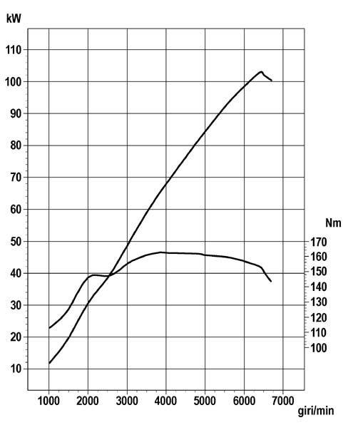
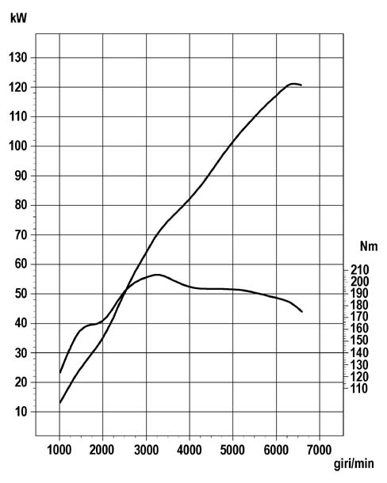
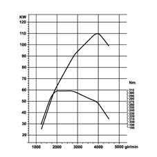

SPECIFICATIONS
- Path
- Technical Data > PROJECT DESCRIPTION AND SPECIFICATIONS > ENGINE TYPICAL CURVES > SPECIFICATIONS
- Kind
- technical data / specifications
- Applies to
- all engines; all production periods
- Interactive page
- https://sloeber94.github.io/elrnDB-aGt/en/#/125000038
Applies to: all engines; all production periods
The power and torque curves illustrated can be obtained with the engine overhauled and run in (50 hours operation) without a fan and with an exhaust silencer and air filter fitted, at sea level.
1.8 T.SPARK

2.0 JTS

3.2 V6
Drawing not available
1.9-JTD 16v
